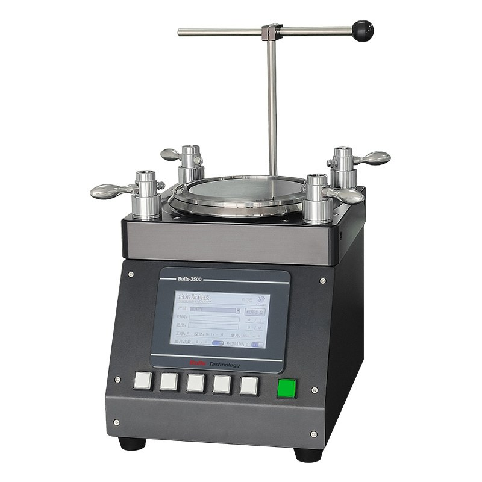
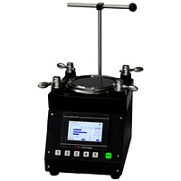
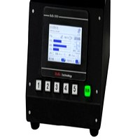
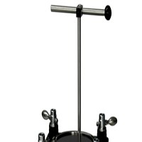
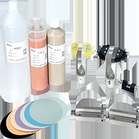
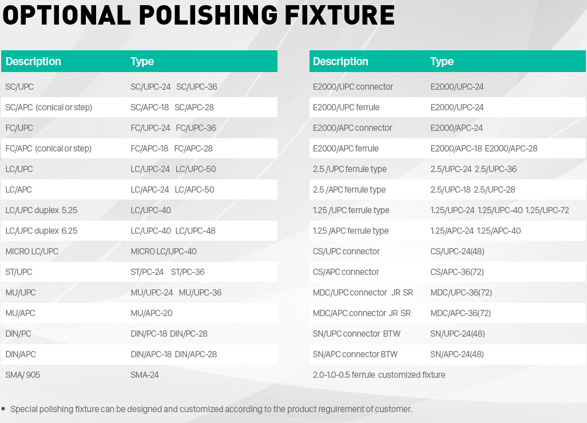

BULLS-3500
High-Performance Fiber Connector Polishing Machine
The BULLS-3500 is a versatile, high-performance polishing machine designed for endface polishing of all standard fiber optic connectors. With smart program control and ultra-quiet operation, it is the ideal workhorse for fiber optic manufacturing facilities of any scale.
Key Features
Reliable performance for everyday fiber polishing needs
Smart Program Control
Pre-programmed and customizable polishing recipes for various connector types. One-touch operation simplifies workflow and reduces training time for new operators.
Ultra-Quiet Operation
Advanced vibration damping and precision-balanced motor design achieve noise levels below 45dB, creating a comfortable working environment even in multi-machine setups.
Versatile Compatibility
Compatible with all standard single-fiber connector types including SC, LC, FC, ST, and more. Quick fixture changeover enables rapid switching between connector types.
Consistent Quality Output
Precision-engineered polishing plate and stable speed control deliver repeatable endface geometry that meets or exceeds IEC and Telcordia standards.
Cost-Effective Operation
Low power consumption, long consumable life, and minimal maintenance requirements result in an exceptionally low cost per polished connector.
Compact Footprint
Space-efficient design fits easily into existing production lines. Lightweight construction allows flexible placement and easy relocation as needed.
Technical Specifications
| Model | BULLS-3500 |
| Application | SC, LC, FC, ST, MU, and other standard connectors |
| Work Stations | 2 stations |
| Polishing Plate | Aluminum alloy, precision-machined, Ø250mm |
| Rotation Speed | 10 - 250 RPM (variable) |
| Pressure Control | Spring-loaded, adjustable |
| Polishing Programs | Up to 100 stored recipes |
| Control System | 5" color touchscreen with microcontroller |
| Noise Level | < 45 dB |
| Endface Geometry | Meets IEC 61755-3-1 standards |
| Power Supply | AC 220V / 110V, 50/60Hz |
| Power Consumption | ≤ 300W |
| Dimensions (W×D×H) | 420 × 400 × 380 mm |
| Weight | Approx. 35 kg |
Compatible Polishing Fixtures
Supports the full range of connector types across SC, LC, FC, ST, MU, DIN, E2000, 2.5mm, 1.25mm, CS, MDC, and SN ferrules. Custom fixtures available on request.

Application Scenarios
Telecom Manufacturing
Standard and high-volume production of single-fiber patch cords and pigtails.
R&D Labs
Flexible recipe management for prototyping and testing new connector designs.
Field Assembly
Compact and portable enough for on-site connector termination and polishing.
Training Centers
Quiet, user-friendly operation ideal for fiber optic technology training programs.
Interested in the BULLS-3500?
Contact our team for detailed specifications, pricing, and customization options.